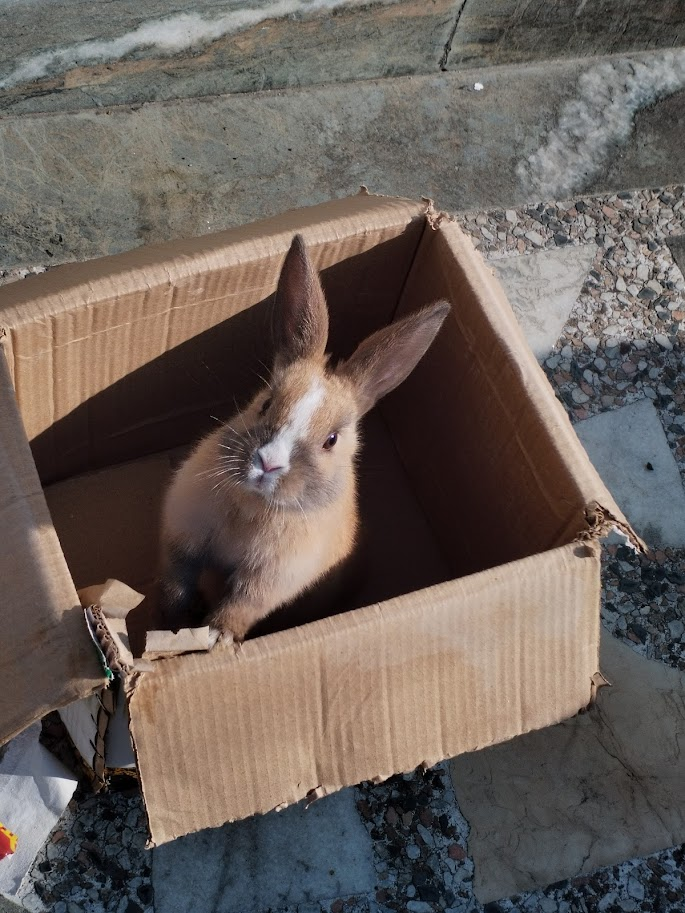
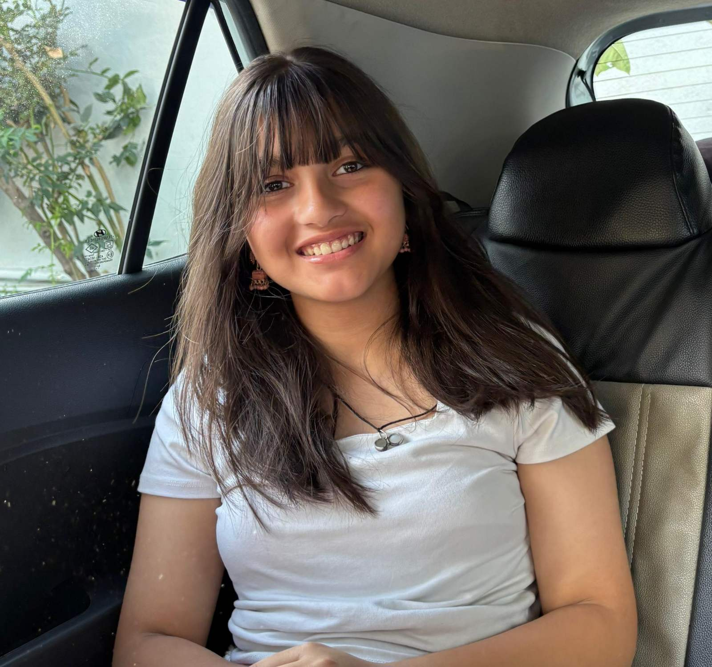
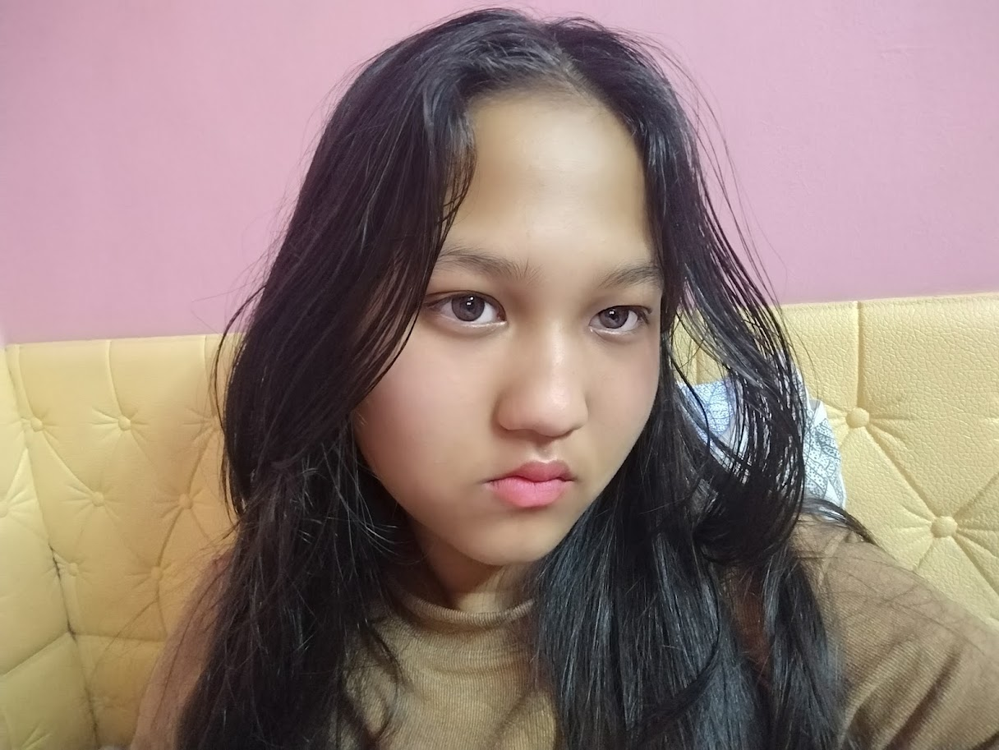
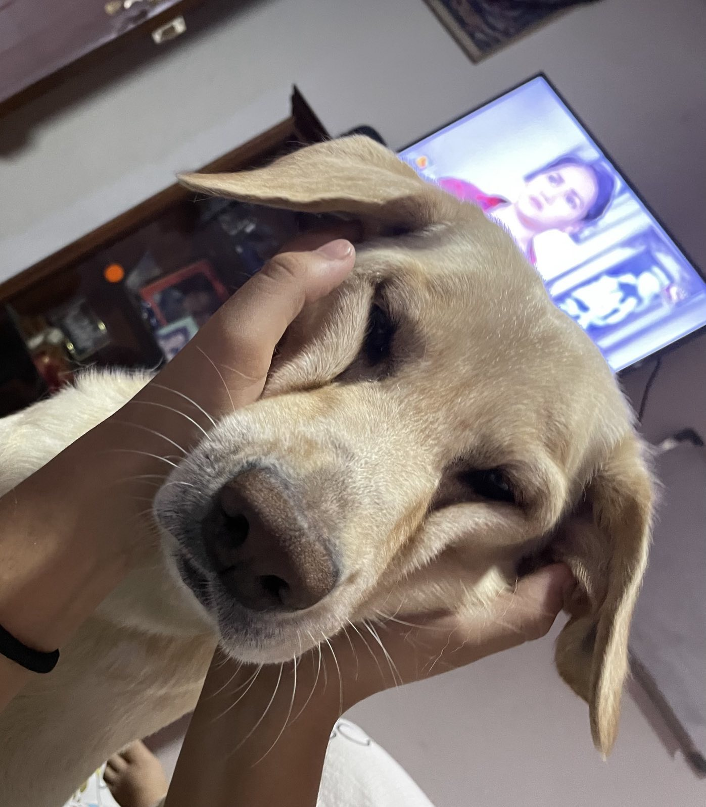

We crochet handmade blankets and toys to bring warmth to animals waiting for their forever homes.
What started as a small hobby has grown into a mission to provide comfort to those who need it most. We believe every shelter animal deserves a soft place to land.
Join us in our journey to make a difference, one stitch at a time.


Lead Designer & Hook Specialist

Shelter Outreach & Logistics
It all started with an accident. One that changed everything. A dog was bleeding to death, and we knew we had to do something. Calls were left unanswered, no one showed up. These furry friends really have no one to turn to. That's why we started Stitch Paws.
Support us in our mission to provide comfort and care for shelter animals.
